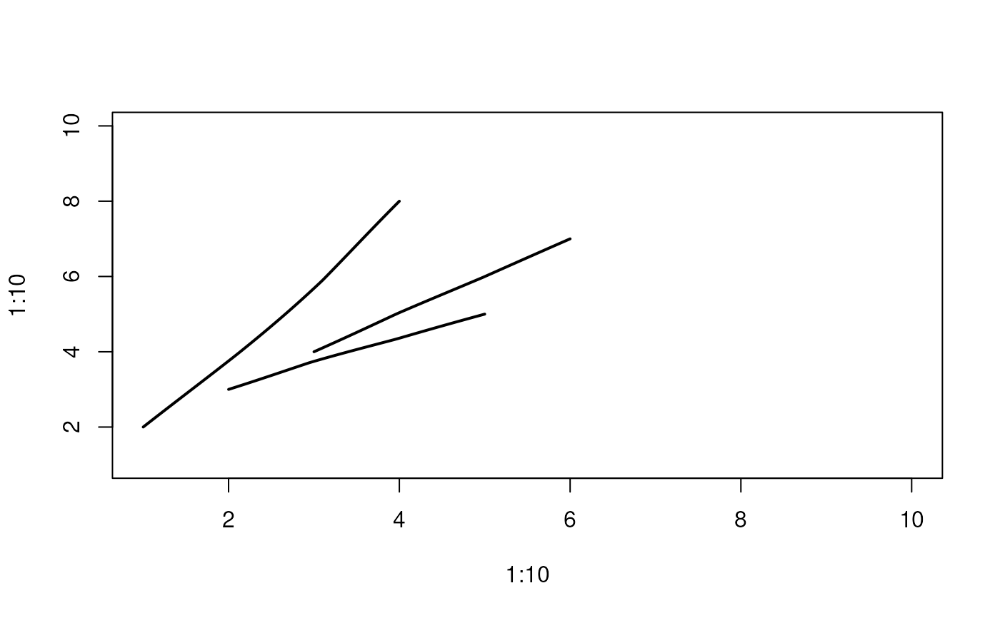

Compute or draw rough segments
Usage
rough_segments(x0, y0, x1, y1, hand = NULL)
draw_rough_segments(x0, y0, x1, y1, hand = NULL, ...)Arguments
- x0, y0
Segment starts.
- x1, y1
Segment ends.
- hand
Hand-drawn geometry settings created with
hand().- ...
Graphics parameters passed to
graphics::lines().
See also
Other rough drawing helpers:
rough_arrows(),
rough_lines(),
rough_points(),
rough_polygons(),
rough_polypath(),
rough_rect()
Examples
rough_segments(1:2, 1:2, 2:3, 3:2)
#> $x
#> [1] 1.000000 1.040840 1.081439 1.121771 1.161815 1.201559 1.240998 1.280132
#> [9] 1.318970 1.357929 1.397262 1.436429 1.475415 1.514205 1.552787 1.591155
#> [17] 1.629302 1.667226 1.705199 1.742955 1.780435 1.817640 1.854578 1.891262
#> [25] 1.927710 1.963946 2.000000 2.000000 2.090909 2.181818 2.272727 2.363636
#> [33] 2.454545 2.545455 2.636364 2.727273 2.818182 2.909091 3.000000
#>
#> $y
#> [1] 1.000000 1.075734 1.151588 1.227576 1.303708 1.379990 1.456424 1.533011
#> [9] 1.609746 1.686420 1.762908 1.839478 1.916139 1.992898 2.069760 2.146730
#> [17] 2.223811 2.301002 2.378170 2.455445 2.532859 2.610411 2.688095 2.765907
#> [25] 2.843837 2.921873 3.000000 2.000000 2.002994 2.005928 2.008542 2.010107
#> [33] 2.009919 2.008839 2.007131 2.006119 2.004773 2.002693 2.000000
#>
#> $id
#> [1] 1 1 1 1 1 1 1 1 1 1 1 1 1 1 1 1 1 1 1 1 1 1 1 1 1 1 1 2 2 2 2 2 2 2 2 2 2 2
#> [39] 2
#>
plot(1:10, 1:10, type = "n")
draw_rough_segments(1:3, 2:4, 4:6, c(8, 5, 7), lwd = 2)
